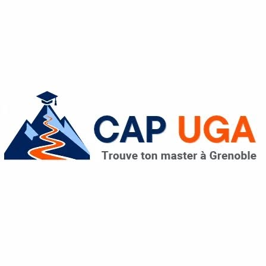

Contexte
Dans le cadre de la SAÉ 3.01, nous développons en équipe de sept une application web client-serveur sur le sujet « Découverte de l'environnement universitaire grenoblois avec services personnalisés pour de futurs étudiants ». Nous l'avons centré sur le choix d'un master : CAP UGA aide un futur étudiant à trouver les masters de l'Université Grenoble Alpes qui correspondent à son parcours, à les comparer selon ses propres priorités et à échanger avec des étudiants qui suivent déjà la formation. Le projet se déroule en itérations, jusqu'à la démonstration finale du 22 janvier 2027.
Compétences visées
- Réaliser un développement d'application
- Gérer des données de l'information
- Conduire un projet
- Travailler dans une équipe informatique
Technologies prévues
- HTML, CSS et JavaScript natif
- PHP 8 organisé en MVC
- PostgreSQL avec PDO
- Leaflet et OpenStreetMap
- GitLab et machines virtuelles
Réalisation
- Itération 1 (terminée) : dossier de cadrage avec périmètre, objectifs, contraintes, registre de 16 risques, personas, analyse de l'existant et choix techniques
- Besoins fonctionnels rédigés en user stories et hiérarchisés : 12 primaires et 7 secondaires
- Modélisation BPMN de l'échange entre un futur étudiant et un étudiant référent
- Présentation de l'avancement devant un comité de pilotage
- À venir : conception (maquettes, modèle de données, diagrammes de séquence), puis développement en janvier
Ma contribution
- Chef de projet : organisation des séances et suivi des rendus
- Rédaction de la partie Réalisation du dossier de cadrage
- Réalisation du diagramme BPMN sous Visual Paradigm
- Présentation du projet lors du point d'avancement
Compétences acquises
- Cadrage d'un projet et analyse des risques
- Rédaction et hiérarchisation de user stories
- Modélisation de processus métier (BPMN)
- Coordination d'une équipe de sept
Difficulté rencontrée
Définir des besoins primaires qui distinguent vraiment notre site de l'existant, comme Mon Master. Tant qu'ils n'étaient pas fixés, il était difficile de répartir le travail entre nous.
Savoir-faire acquis
Partir d'un sujet large pour le transformer en un projet cadré, avec des besoins hiérarchisés, des risques identifiés et un planning partagé par toute l'équipe.